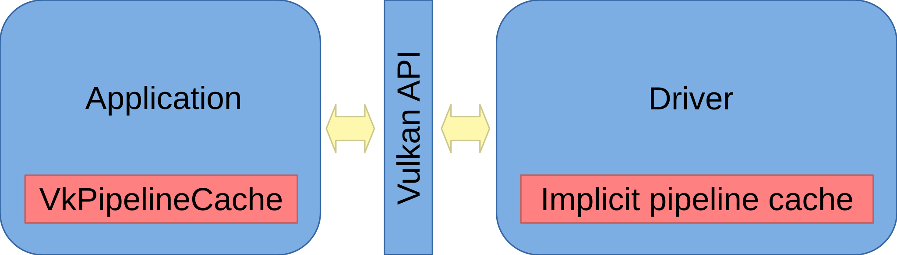

Pipeline construction may be time consuming operation. We definitely do not want to wait seconds or tens of seconds before the application compiles shaders and creates all its pipelines. Therefore, caches are used. We will learn more about them in this article.
The shader used in the previous article is very big one. It is composed of 10'000 multiplications and 10'000 additions. Unless caches are used, construction of the pipeline might take quite a time. Following table shows my measurements of the pipeline construction time on some graphics cards:
| GPU name | Compile time (ms) | Cache retrieval time (ms) | ||
| Quadro RTX 3000 (Windows) | 1'700 | 6.80 | ||
| Radeon RX 6950 XT (Linux) | 96.7 | 0.325 | ||
| Radeon RX 6950 XT (Windows) | 12'500 | 0.266 | ||
| Intel UHD Graphics 630/CML (Windows) | 1'950 | 7.23 | ||
| Radeon RX 590 (Windows) | 6'250 | 0.486 | ||
| GeForce 1080 Ti (Linux) | 917 | 1.34 | ||
| GeForce 1080 Ti (Windows) | 2'590 | 1.24 |
The first column shows the graphics card name and operating system. The second contains the pipeline construction time if shaders need to be compiled. We see times from about hundred of milliseconds to about twelve seconds. The third column shows the construction time if a cache is used. The cache times are quite low, ranging from hundreds of microseconds to few milliseconds. In summary, pipeline caches might be quite a speedup for Vulkan applications, especially their start up time, when pipelines are usually created.
Let's first try to understand how Vulkan uses pipeline caches:

There are two pipeline caches. The first one is the application provided VkPipelineCache object and the second one is the driver managed implicit pipeline cache.
The application can create its own VkPipelineCache object to manage its own pipeline cache. It can pass it to pipeline create function calls as an argument, have the cache filled with the content during pipeline construction, and save it to disk. On the next run, the application can initialize VkPipelineCache with the data stored on disk, pass the cache to pipeline create function calls and have pipelines created in the fast way using the cache data.
Most of Vulkan drivers provide their own pipeline cache called internal or implicit cache. Whenever an application wants to create a pipeline, it looks into its internal cache first. If it is not found, it is constructed and stored in the cache. Next time, it will be readily available in the cache, allowing for quick pipeline construction.
Where the pipeline cache can be found on the disk?
If want, we can delete the cache. This way, we force the rebuild of pipelines.
To only disable the implicit driver cache:
By disabling the cache, we might measure the pipeline construction time and find out whether the first start is not too slow. We might want to print some message to the user to be patient and wait. We will do exactly this in the code of this article.
As an alternative to disabling the driver cache, we might modify the shader a little bit, for example by changing some constant by a very small amount.
Vulkan 1.3 provides flag vk::PipelineCreateFlagBits::eFailOnPipelineCompileRequired
that makes the pipeline construction fail if it is not found in any cache.
We will use the flag to measure pipeline construction time when pipeline cache is used
and when the full construction of pipeline takes place.
In the first part of the code, we pass vk::PipelineCreateFlagBits::eFailOnPipelineCompileRequired
flag and measure the time of the construction. If construction succeeds, we can print construction time when
the cache was used:
// load pipeline from a cache
cout << "Creating pipeline..." << flush;
chrono::time_point compileStart = chrono::high_resolution_clock::now();
vk::UniquePipeline pipeline;
if(pipelineCacheControlSupport) {
vk::Result r =
vk::createComputePipelineUnique_noThrow(
nullptr,
vk::ComputePipelineCreateInfo{
.flags = vk::PipelineCreateFlagBits::eFailOnPipelineCompileRequired,
.stage =
vk::PipelineShaderStageCreateInfo{
.flags = {},
.stage = vk::ShaderStageFlagBits::eCompute,
.module = shaderModule,
.pName = "main",
.pSpecializationInfo = nullptr,
},
.layout = pipelineLayout,
.basePipelineHandle = nullptr,
.basePipelineIndex = -1,
},
pipeline
);
chrono::time_point compileEnd = chrono::high_resolution_clock::now();
float delta = chrono::duration(compileEnd - compileStart).count();
if(r == vk::Result::eSuccess)
cout << " done.\n The pipeline was retrieved from a cache in " << delta * 1e3 << "ms." << endl;
else if(r == vk::Result::ePipelineCompileRequired)
; // compile the pipeline in the following code block
else
vk::throwResultException(r, "vkCreateComputePipelines");
}
In the second part of the code, we just construct the pipeline and print its construction time when not found in the cache:
// compile pipeline
if(!pipeline) {
pipeline =
vk::createComputePipelineUnique(
nullptr,
vk::ComputePipelineCreateInfo{
.flags = {},
.stage =
vk::PipelineShaderStageCreateInfo{
.flags = {},
.stage = vk::ShaderStageFlagBits::eCompute,
.module = shaderModule,
.pName = "main",
.pSpecializationInfo = nullptr,
},
.layout = pipelineLayout,
.basePipelineHandle = nullptr,
.basePipelineIndex = -1,
}
);
chrono::time_point compileEnd = chrono::high_resolution_clock::now();
float delta = chrono::duration(compileEnd - compileStart).count();
if(pipelineCacheControlSupport)
// pipeline was compiled - we know it from pipeline cache control
cout << " done.\n The pipeline was compiled in " << delta * 1e3 << "ms." << endl;
else
// pipeline was created from cache or by compilation - no pipeline cache control support to know more
cout << " done.\n The pipeline was created in " << delta * 1e3 << "ms." << endl;
}
All the special cache code is guarded by pipelineCacheControlSupport boolean.
We get its value from Vulkan 1.3 features:
// get pipeline creation cache control support
bool pipelineCacheControlSupport;
if(vulkan13Support) {
vk::PhysicalDeviceVulkan13Features features13;
vk::PhysicalDeviceFeatures2 features10 = {
.pNext = &features13,
};
vk::getPhysicalDeviceFeatures2(pd, features10);
pipelineCacheControlSupport = features13.pipelineCreationCacheControl;
} else
pipelineCacheControlSupport = false;
There might be more compatible devices in the system. It might be desirable to have an option to manually choose which device we want to use. The available options have already assigned numbers:
Compatible devices: 1: Intel(R) UHD Graphics (compute queue: 0, type: IntegratedGpu) 2: Quadro RTX 3000 (compute queue: 0, type: DiscreteGpu) 3: Quadro RTX 3000 (compute queue: 2, type: DiscreteGpu) 4: llvmpipe (LLVM 20.1.5, 256 bits) (compute queue: 0, type: Cpu)
We can pass '-' followed by the number to the command line to select particular device and compute queue. For example, specifying -1 to command line will measure performance of integrated Intel GPU.
Passing substring of device name is another way to select the device to test. For example, passing llvm on the command line will select llvmpipe software device that runs completely on the CPU.
We can combine both approaches and specify RTX to get two devices while the first one would be used unless we specify -2 to select the second one that uses different compute queue.
The details of the implementation can be found in article source code.